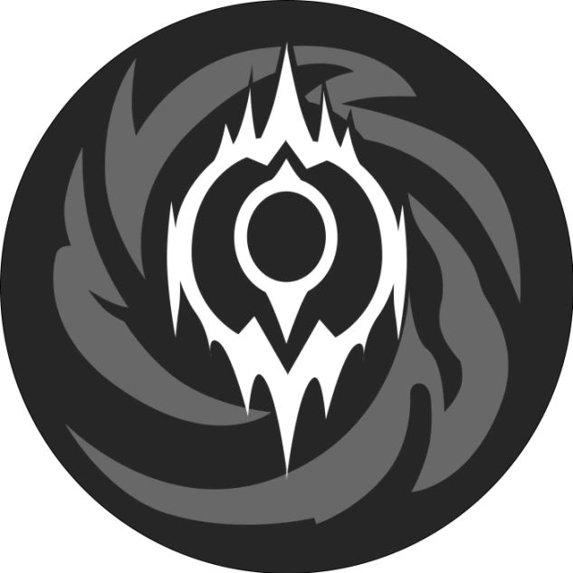
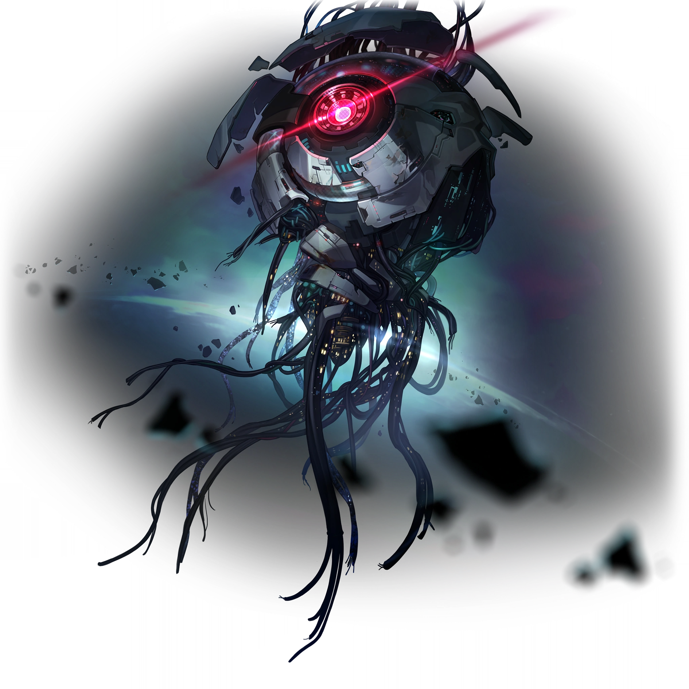

Expresso Astral
O Expresso Astral é o principal cenário no jogo, e ele foi criado pelo Aeon do Desbravamento - Akivili. O Expresso tem como principal objetivo o desbravamento atráves da viagem espacial pela Ferrovia Astral. A tripulação do expresso, chamados também de Inominados, conta com nosso personagem - Desbravador(a) -, Himeko, Welt, Dan Heng, 7 de Março e o mais recente tripulante, Sunday, que embarcou recentemente do último planeta, Penacony. Além desses, tem o condutor, chamado de Pompom. Sabe-se que antes dessa atual tripulação, tiveram outros 4 tripulantes, e a partir de sumiços e adversidades dos mesmos, o Expresso acabou encerrando suas atividades. Muitos anos depois, Himeko encontrou o trem, assim o consertando. Depois disso, à medida que viajavam, os tripulantes que hoje conhecemos se uniram ao expresso.
Vagão do expresso

Vagão de convivencia

Aeons
Aeons são basicamente entidades divinas no vasto cosmo espacial. Existem milhares desses pelo universo, e cada um tem um significado, ensinamentos e coisas assim. Eles possuem um poder sobrenatural, e os humanos podem escolher seguir o Aeon ou o caminho(mais de um) assim como humanos podem ser escolhidos pelos aeons - chamados emanadores, que dependendo do Aeon, este o concede poderes parciais ou totais, e há também os abençoados por algum Aeon, que é o caso da sociedade dos gênios, estes recebem no máximo um poder parcial. Geralmente, há também grupos de pessoas que seguem os Aeons, são as chamadas facções, o Expresso por exemplo é uma: eles seguem o caminho do Aeon Akivili, mesmo sendo um caído(“morto”). No jogo mesmo, é possível os personagens seguirem 8 caminhos no momento. Até a última atualização (2024), eram apenas 7.
IX, Aeon da Inexistencia

IX, Aeon da Inexistencia
É o Aeon da Inexistência. É um Aeon bem diferente, o qual não interage com os outros, além da sua inexistência ser algo também bem misterioso. Sua crença é baseada na inutilidade da existência, então tudo que fazem é inútil; sendo assim, o fim é o esperado, já que a trajetória é dispensável. Inexistência em inglês é “Nihility”, esse caminho tem uma certa inspiração no niilismo, uma corrente filosófica que questiona justamente o valor e o sentido da vida. Sua facção seguidora são os Doutores do Caos. A emanadora da inexistência é a vigia da galáxia, Acheron. (Observação:nem todos os seguidores do caminhos vão participar das facções existentes para aquele caminho).
Nanook, Aeon da Destruição

Nanook, Aeon da Destruição

É o Aeon da destruição. Nanook viu o universo nascer e crê que este é um erro, e entende que o que tem de comum em todas as civilizações é a guerra, então é isso que ele fará. É líder da facção legião antimatéria, que tem um papel bem importante no jogo, sendo o primeiro aeon que o desbravador(a) entra em contato.
Yaoshi, Aeon da Abundância

Yaoshi, Aeon da Abundância

É o Aeon da Abundância. Se diz o Aeon da paz e nutridor do povo, tanto que ele concede a benção da Imortalidade para quem o segue, mas é necessário muito cuidado ao se envolver nesse caminho. Exemplos de facções seguidoras são os habitantes da abundância e os Discípulos de Sanctus Medicus - que inclusive tem uma grande importância na história do Luofu.
Fuli, Aeon da Recordação

Fuli, Aeon da Recordação

É o Aeon da recordação. Durante o jogo, era possível ver ele no universo simulado e em outros momentos, entretanto, recentemente virou um caminho jogável com a nova personagem Aglaea, e a nova versão do desbravador(a). O objetivo de Fuli é registrar todos os acontecimentos do universo porque depois da destruição, é necessário que haja o registro, com isso, sua principal facção é o Jardim da recordação. Um fato curioso, é que a personagem Black Swan faz parte do jardim da recordação, mas seu caminho no jogo é da Inexistência.
Lan, Aeon da Caça

Lan, Aeon da Caça

É o Aeon da Caça. É conhecido também como a “Flecha do Destino”. Ele nutre um ódio por Yaoshi e seus seguidores, já que Este Aeon concede vida eterna a quem o segue. Essa questão dos seguidores de Lan irem atrás dos seguidores de Yaoshi, gerou todo o conflito da narrativa do Luofu do Xianzhou. É necessário entender que o Xianzhou é uma aliança, e bem no começo da história do Luofu enquanto nação e planeta,eles foram atrás de Yaoshi para o concederem a imortalidade.Eles conseguiram isso através da Árvore Ambrosiana, mas com o passar do tempo uma praga vinda da Árvore foi se assolando pelo Luofu; portanto, há um "mito" de que Lan nasceu em Luofu durnte a crise e então com sua flecha, destruiu a Árvore. Hoje, a Aliança Xianzhou segue Lan; outra facção seguidora dele são os Vigias da Galáxia.
Nons, Aeon da Erudição
Nons, Aeon da Erudição

É o Aeon da Erudição. É basicamente uma máquina, o qual ascendeu e se tornou um Aeon. Um tanto enigmático, sua facção seguidora é a sociedade dos gênios - a qual ele faz parte -, e os participantes desta são aqueles abençoados por sua inteligência. O objetivo de Nous é simplesmente entender o universo e resolver todos os seus mistérios. No momento, a emanadora da Erudição é a nova personagem 5 estrelas, The Herta
Qlipoth, Aeon da Preservação

Qlipoth, Aeon da Preservação

É o Aeon da preservação. É um dos mais antigos, ele é quem determina as Eras de Âmbar, que é a contagem de tempo do universo do jogo. Qlipoth é quem sustenta Jarilo-IV, e lá sua facção seguidora são Os Arquitetos. O objetivo deste Aeon é isolar os planetas entre si, tanto que é o que acontece com o planeta citado anteriormente. Outra facção importante que o segue é a CPI - corporação da paz interestelar -, mas o objetivo da CPI é muito mais político e econômico. Não se sabe exatamente o objetivo deste, já que nas fontes do jogo é dito que a CPI oculta a vontade Dele.
Xipe, Aeon da Harmonia

Xipe, Aeon da Harmonia

É o Aeon da Harmonia. Xipe é nascido de uma fusão com outro Aeon, chamado Ena, a Ordem. Este Aeon prega a alegria e a harmonia por onde passa, inclusive, a facção que comanda Penacony é A Família, seguidores fiéis de Xipe. Xipe acredita que as vidas inteligentes têm que abandonar o egoísmo covarde e as diferenças entre os indivíduos para combater a brutalidade da vida, assim como criar uma canção singular para ajudar os fracos contra a morte.
Planetas
Atualmente, o jogo conta com 5 planetas:Estação Espacial da Herta, Jarilo-IV, Luofu do Xianzhou, Penacony e o mais recente, Amphoreus; a ordem de passagem do Expresso Astral é essa. O sistema do jogo conta com as Missões de Desbravamento, e à medida que você as completa, há um avanço na narrativa.
Estação Espacial da Herta

Estação Espacial da Herta

É o primeiro "planeta" da história, é onde tudo começa. A dona dessa estação é a Herta, como o nome diz. Logo de começo, vimos que o Desbravador(a) é um receptáculo de pesquisa da Herta, e os chamados Caçadores de Stallaron colocam em nós um Stallaron (o chamado câncer de todos os mundos, e é algo bem potente para destruição) e explicam para nós que estamos no plano do roteirista - Elio -, e nosso destino é achar uma resposta através do Desbravamento, o que implica que a entrada no Expresso Astral. Neste primeiro momento, conhecemos os personagens do Expresso, os caçadores - Kafka, Blade & Silver Wolf -, Herta, Arlan, Asta…há 3 missões de desbravamento no começo, além de outras que compõem a narrativa a partir dessas 3 principais. Em termos de ambientação, a estação é um local de pesquisa, no qual as pessoas que trabalham lá são devotadas à Gênia, como ela se refere por ser uma importante participante da Sociedade dos Gênios. Também, na estação é onde fica o "Universo Divergente", um conteúdo endgame do jogo.
Jarilo-IV

Jarilo-IV

É a primeira parada do Expresso, é onde iniciamos o desbravamento. Jarilo é um planeta coberto de gelo, e isso acontece por conta de um Stalleron, porém, o único lugar habitável é Belobog, a capital, que tem todo um sistema de aquecimento. À medida que somos apresentados ao planeta, entendemos que o planeta sofreu com guerras, e depois que encerrada, uma paz reinou; entretanto, sendo um lugar com poucos recursos, depois da crise do Stalleron, a CPI fez um acordo de reconstrução, endividando o planeta. Também, é apresentado que os habitantes do planeta constantemente têm de enfrentar os restos desse Stalleron, o Fragmentum. Como a jornada do desbravamento também é baseada nessa ajuda por onde se passa, a estadia em Jarilo se volta para isso. Com 4 missoes de desbravamento, além daquelas adjacentes, acompanhamos Cocolia - "Rainha" de Jarilo - sendo controlada pelo Stalleron (uma vozinha da destruição) só que outros personagens de poder como Bronya, Gepard etc, não percebem. Por Cocolia estar controlada pelo Stalleron, Jarilo fica numa situação vuneravel, já que ela se cega ignorando os problemas sociais - e entrando um pouco na parte da ambientação, Jarilo conta com a parte de cima e a de baixo, sendo em cima onde tinham-se mais recursos e a de baixo uma mais empobrecida. A história se desenrola, e o Desbravador(a) consegue conter o Stalleron, mas conta com ajuda de Qlipoth, um Aeon que abençoa Jarilo-IV; essa ajuda também desbloqueia um novo modo/caminho de jogo, o da preservação.
Luofu do Xianzhou

Luofu do Xianzhou

A segunda parada do Expresso é o Luofu, que parece ser uma nave só, mas na verdade é uma parte de 6 conjuntos de uma grande nave, a qual essa é comandada pela Aliança Xianzhou. Essa aliança tem o objetivo de erradicar os seguidores da abundância, já que são abençoados por Lan, Aeon da Caça. Há 4 missões de desbravamento e 3 missões de companheiro/aventura para entender a história do Luofu. Num primeiro momento, a ida é para ir atrás dos Caçadores de Stallaron - especificamente a Kafka -, porque acreditava-se que a crise relacionada a Stellaron no Luofu era culpa deles, mas na verdade, eles foram ajudar. O problema desse Stalleron é que ele revive a Árvore Ambrosiana, e aí é revelado que quem trás isso são os Discípulos de Sanctus Medicus - seguidores de Yaoshi, Aeon da Abundância. Com nosso dever com Desbravamento de ajudar os mundos, acontece o conflito com boss, e essa situação é cessada.
Penacony

Penacony

Fica localizada em Asdana, uma região do espaço conhecida por ter um grande fluxo de memórias, mas Penacony em si é chamado de Planeta das Festividades; é a terceira parada do Expresso. É comandado pela Família, e a narrativa gira em torno do convite recebido para ir ao Festival Carismonia. No começo da missão principal de desbravamento - O Som e A Fúria - Pompom diz que os antigos inonimados ficaram por Penacony, e o objetivo da missão é ir atrás do paradeiro e o que eles fizeram por lá. Nesse Arco, Penacony é um planeta “regido” por Xipe, a Harmonia. Neste planeta, em termos de mapa, temos o mundo acordado e o mundo onírico - que é um mundo de sonhos onde para acessar, é necessário ir no grandioso hotel de Penacony. Pela Harmonia acreditar crer na bondade, e por ter também um mundo de sonhos, o qual beira a ilusão, temos Sunday - um líder importante da Família - que acredita que Penacony pode ter mais que Xipe, e no caso seria a Ordem - Aeon com quem Xipe se fundiu. Porém, com as 4 missões de desbravamento, e outras adjacentes, temos também o desenvolvimento de personagens como Aventurine, Acheron e Firefly; explicar separadamente a história de cada seria desviar do foco do arco, mas eles têm um papel importante na narrativa, já que com Aventurine e Acheron é possível descobrir melhor o que exatamente A Família planeja.
Penacony tem uma parte em seu mundo onírico que está um tanto corrompido, e é ali que reside o caos, e esse caos é um Sttelaron (essa parte do Stallaron não tem a ver necessariamente com o plano inicial de Sunday, mas algo que rodeia A Família há bons séculos) trago por alguém há anos. Gallagher, um personagem que nos acompanha, apresenta o legado do planeta e descobrimos que todo o Doce Sonho acontece graças a um antigo Inonimado - Mikhail, e depois descobrimos que esteve escondido o tempo todo como Misha, que era apenas um menino que trabalhava no hotel; esse tempo todo ele esteve esperando pelos Novos Inominados e que o futuro de Penacony está em nossas mãos.. Com isso, batalhamos com Sunday e por mais que tenha sido vencida, Black Swan - que trabalha no Jardim da Recordação, com memórias - nos revela que estávamos velados no sonho de Ena e que escapar da Ordem e ilusão tinha sido inútil, mas acontece outro conflito - com auxílio de Acheron, Emanadora de Inexistencia que consegue romper o tempo espaço - e aí sim a Ordem é derrubada e o Planeta é salvo. Posteriormente, a CPI se envolve por lá e cuida do financeiro, já que Sunday - representante da Familia - é preso.
Amphoreus

Amphoreus

Antes de vir para cá, há uma parada no Luofu. Enfim, é onde atualmente o jogo se encontra, e aconteceu algo crucial antes do embarque para Amphoreus : Sunday se une ao expresso. Antes de realmente o arco de Penacony acabar, é revelado que Jade - trabalha na CPI, com cargo alto - faz um acordo com ele e o solta. Não podendo mais ficar em seu planeta, ele conversa com Welt e pede para se unir. Em Amphoreus, ainda temos uma pouca ambientação e história, no momento, há uma Missão de Desbravamento (dentro dela tem várias mini-historinhas que compõem a missão como um todo). Por enquanto, há mais que se falar da ambientação do que a história em si. A ambientação é toda inspirado na história da Grécia Antiga etc.